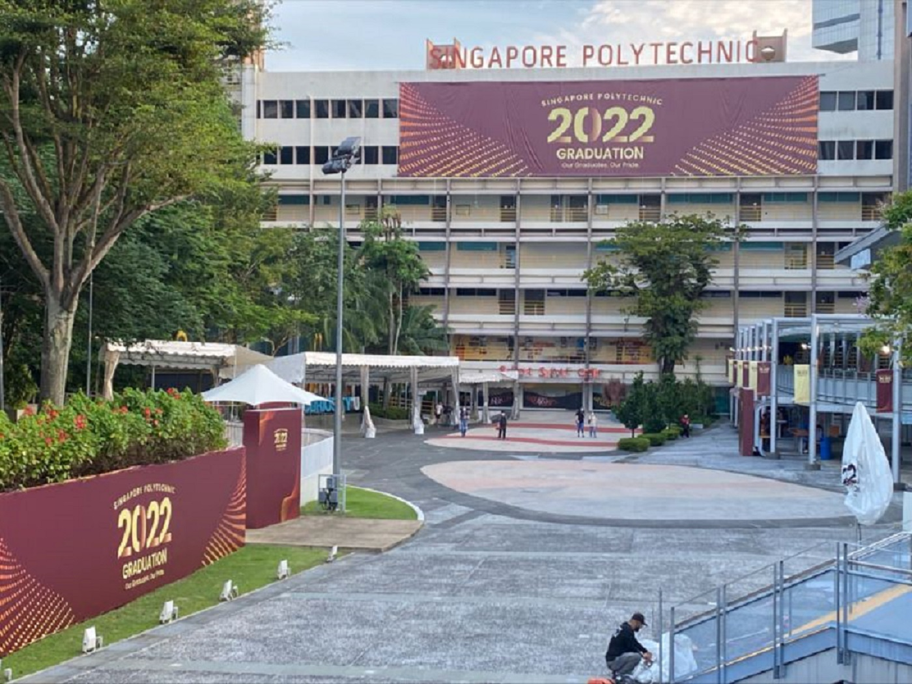
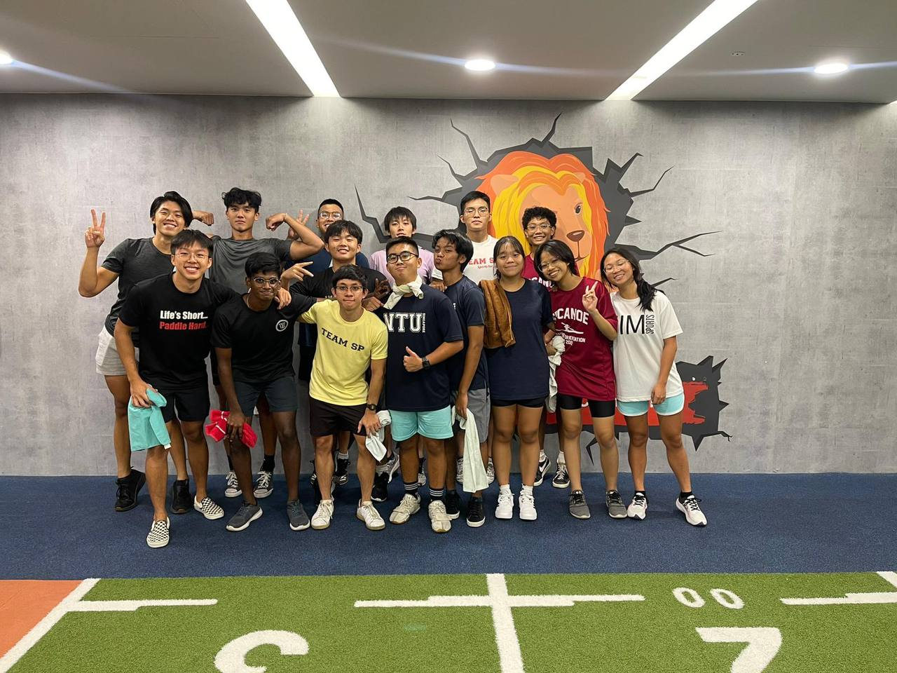

Life at SP
Integration
SP has given me a unique experience that my primary and secondary school life has not given me. Open this modal to learn more!
Out of class
As mentioned in my introduction, I joined the SP canoe sprint team as my cca. To find out more , open the modal!
Course choices
DISM

To find out more , open the modal!
DAAA

To find out more , open the modal!
DIT

To find out more , open the modal!